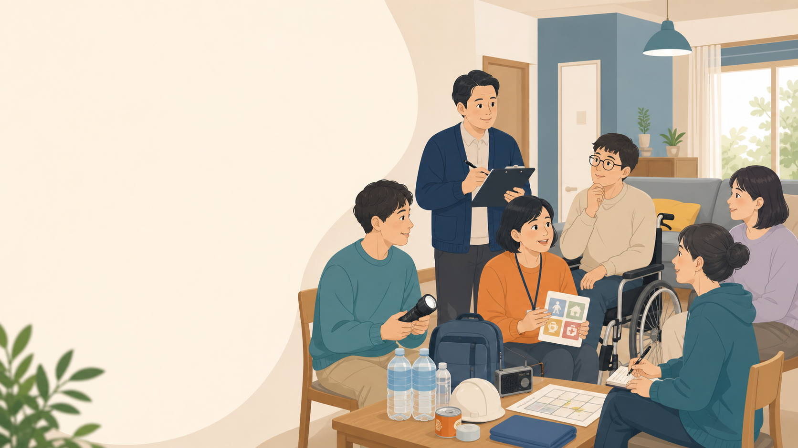
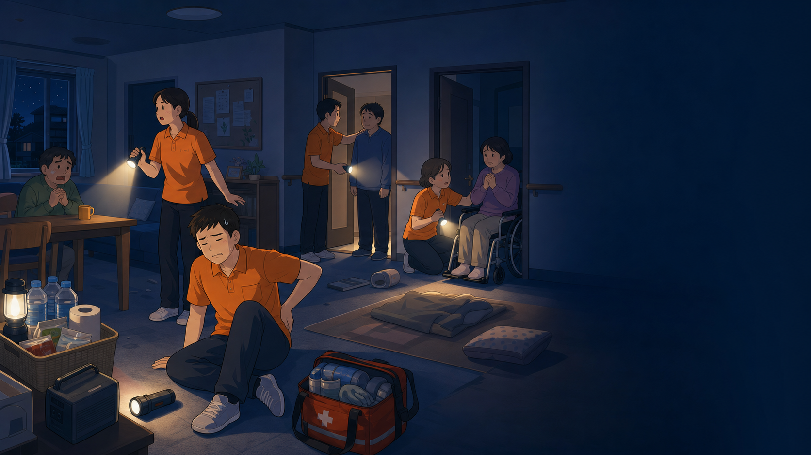
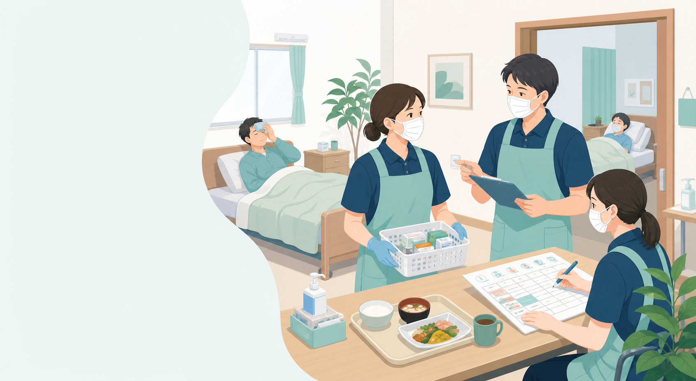

🏠
障がい者GH
BCP委員会
利用者の生活と支援を継続するために
🦠 感染症BCP
🌋 自然災害BCP
____年度 第 回 BCP委員会
開会
本日のゴール
1️⃣
違いを理解する
防災訓練と BCP の本質的な違い
2️⃣
具体的に考える
自分が指揮する場面を想定する
3️⃣
運用案を承認する
研修・訓練・記録の方針を決定
⏱ 本日の予定：
60分
第1部｜理解を揃える
🤔
まず聞かせてください
防災訓練と BCP は
何が違うと思いますか？
数名の方に聞かせてください
第1部｜理解を揃える
防災訓練
vs
BCP
🚒 防災訓練
🔴 命を守る
🔴 安全を確保する
🔴 避難する
🔴 被害を最小限にする
避難 ＝ ゴール
📋 BCP
🔵 安全確保後も支援を続ける
🔵 何の支援を継続するか決める
🔵 誰が・何を・どう判断するか
🔵 限られた状況で動く計画
避難は出発点
第1部｜理解を揃える
🌃
想像してみてください
避難が完了しました。
それから翌朝まで、
利用者の生活に何が起きますか？
第1部｜理解を揃える
避難後の現実
⚡
停電
💧
断水
👥
職員不足
😰
利用者の不穏
それでも、20名の生活支援は続く
服薬 食事 水分 排泄 体調確認 見守り 医療的ケア…
第1部｜理解を揃える
💡
BCP とは
限られた状況で
何の支援を止めないかを
決めておく計画
全部を続ける計画ではない
限られた
人員
限られた
物資
限られた
環境
第1部｜理解を揃える
障がい者GHで
BCPが特に重要な理由
💊
服薬管理
止めると命に関わる
🏥
医療的ケア
停電が命取りになる
😟
環境変化
不安・不穏につながる
🗣️
意思疎通
代替手段が必要
👤
個別性
一律対応では動けない
🌙
夜間支援
少人数での対応が必要
第2部｜想定場面
考えるときの 4 つの視点
🔍
確認する
利用者・職員・建物・人員
▶️
継続する
止められない支援
⏸️
中止する
縮小できる業務
📞
連絡・要請
応援・報告先
正解ではなく「自施設ならどうするか」を考える

第2部｜場面①
2:00
スタート
リセット
🌋
夜間の地震
夜22時、震度6弱の地震。
停電・断水
。
夜勤者3名のうち
1名が負傷
。利用者
数名が不穏
。
翌朝まで
応援は来られない
。
1
最初に何を確認し、どう動きますか？
2
明日の朝まで絶対に継続する支援は何ですか？
3
一時的に縮小・中止する業務は何ですか？
🔍 確認する
▶️ 継続する
⏸️ 中止する
📞 連絡・要請
第2部｜場面①整理
夜間の地震：確認ポイント
🔍
初動で確認
利用者・職員の安否確認
建物の安全確認
医療機器・服薬の状況確認
▶️
継続する支援
服薬・食事・水分・排泄
医療的ケア
不穏者の見守り・声かけ
⏸️
一時中止
入浴・レク
通常記録業務
清掃・整理
📞
連絡・要請
本部・管理者への報告
応援職員の要請判断
家族・行政への連絡判断
管理者：全体を判断・指示 ／ サビ管：利用者ごとの支援継続確認

第2部｜場面②
2:00
スタート
リセット
🦠
感染症による職員不足
利用者
2名が感染判明
。うち1名は
基礎疾患あり
。
職員
1名が発熱で欠勤
。
明日の日勤は
通常の7割の人数
。
1
最初に何を確認し、どう動きますか？
2
明日の朝まで絶対に継続する支援は何ですか？
3
一時的に縮小・中止する業務は何ですか？
🔍 確認する
▶️ 継続する
⏸️ 中止する
📞 連絡・要請
第2部｜場面②整理
感染症：確認ポイント
🔍
初動で確認
感染者のゾーニング確認
基礎疾患者の状態確認
明日の人員配置の確認
▶️
継続する支援
服薬・食事・水分・排泄
感染対策（PPE・手洗い）
利用者の体調確認
⏸️
一時中止
通所・外出・面会
入浴・レク
不要な業務の縮小
📞
連絡・要請
医療機関・保健所への連絡
応援職員の確保
家族・行政への連絡判断
感染症は「長期間続く災害」 人員が減った状態での支援継続を想定する
第2部｜場面③
1:00
スタート
リセット
🗓️
1分で考えてください
明日の朝、地震が起きると
分かっているとしたら
今日中に確認すること を3つ
考えた後、1〜2名に発表してもらいます
第3部｜役割整理 ① / ②
👤
管理者の役割
「全体を見て 判断・指示する人」
⚖️
業務の継続・縮小・中止
「今夜、何を続けて何をやめるか」を決める
🤝
応援要請のタイミング
「いつ・誰に・何人を頼むか」を判断する
📞
対外連絡の判断
家族・本部・行政へ「いつ・何を伝えるか」
🏠
施設方針の最終決定
施設内待機か避難継続かを最終的に決める
管理者は「全部やる人」ではなく 「全体を見て決める人」
第3部｜役割整理 ② / ②
サービス管理責任者の役割
「誰の・何の支援が止まると危険かを整理する人」
💊
止められない支援の確認
服薬・医療的ケアが「絶対に止められないか」を整理
😟
不穏・パニックリスクの把握
誰が・何がきっかけで不穏になるかを事前に整理
📋
個別支援情報の整備
応援職員がすぐ動ける「個別支援シート」の準備
🔄
支援計画とBCPの整合確認
個別支援計画とBCPクイックカードの内容にズレがないか
サビ管は「誰のどの支援が止まると危険か」を明確にする人
第4部｜運用確認
今年度の BCP 運用案 確認・承認
📖 研修
🏃 訓練
📝 記録
🦠 感染症BCP
共通資料・動画で実施
各GHで実地訓練
ゾーニング・PPE・支援継続
受講記録＋訓練記録
各GH保管
🌋 自然災害BCP
共通資料・動画で実施
各GHで実地訓練
避難・支援継続・備蓄確認
受講記録＋訓練記録
各GH保管
年2回の実施で「研修 2回・訓練 2回」の実績として記録
第4部｜運用確認
年間実施サイクル
📖
研修
▶
🏃
訓練
▶
📝
記録
▶
🔎
課題整理
▶
🔧
BCP更新
▶
📢
職員周知
訓練後に必ず残す 3 点
分かった課題
次回までに改善すること
BCPに追記・修正すること
まとめ
本日決めること
✅ 承認したこと
🔧 修正して実施
修正内容：
担当：
期限：
修正内容：
担当：
期限：
📌 次回確認
次回委員会： 年 月 日（ ） ： 〜
◀
1 / 18
▶